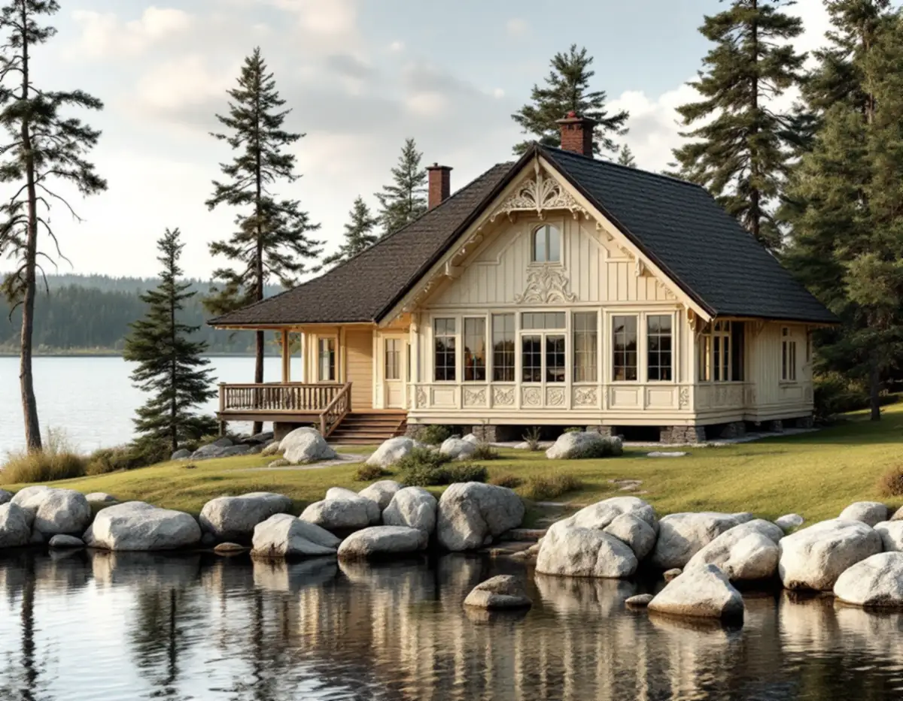
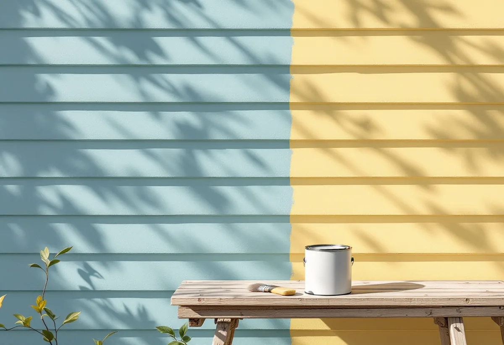

Platsbesök
Vi tittar på färgtyp, underlag, väderstreck och hur ställningen kan placeras på tomten.
En fasad på Mälaröarna målas inte när det passar i kalendern, utan när virket är torrt och vädret håller. Geal Entreprenad AB målar fasader på villor, sommarhus och uthus på Ekerö och lägger upp arbetet efter säsong, sol och torktider, så att färgen får fästa som den ska.

Kommunens kulturmiljöprogram från 2015 beskriver Kungshatt som en av Mälaröarna som saknar fast landförbindelse. Ön är bilfri, har få bofasta, och huvuddelen av byggnaderna används bara sommartid. Där står ett femtiotal sommarvillor, så kallade sommarnöjen, från tiden kring sekelskiftet 1900, med rikt dekorerad panelarkitektur och öppna eller inglasade verandor på tomter med klippväggar.
På Adelsö beskriver programmet i stället de förhållandevis stora fritidshusområden som byggdes under andra halvan av 1900-talet, på öns södra sida och vid färjeläget. Det karaktäristiska är att husen ligger dolda i skogsterräng. Sommarvillorna på Kungshatt används mest sommartid, och det är också under sommarhalvåret som en fasad kan målas.

Riksantikvarieämbetets handbok om byggnadsmåleri anger att all utomhusmålning i Mellansverige bör göras under april–september och i lämplig väderlek. För linoljefärg är maj–augusti den bästa perioden, när det är varmt och torrt. Trä som ska målas måste vara torrt, och fuktkvoten får inte överstiga 15 procent när färgen stryks.
Färgtyperna tål vädret olika. Slamfärg kan enligt handboken strykas i både torrt och fuktigt väder utan att hållbarheten blir sämre, medan kalkfärg på puts ska strykas från senvåren till eftersommaren, i god tid före perioder med risk för frost, och bara ett skikt per dag. Även en nytvättad träfasad måste vara torr igen innan den grundas, eftersom fuktkvoten gäller vid själva målningstillfället. Därför bokar vi inte in en ommålning på en viss dag, utan inom ett väderfönster där virket hinner torka.
Direkt solsken ska undvikas när linoljefärg stryks, skriver Riksantikvarieämbetet, eftersom ytan då torkar för snabbt och färgen kan bilda blåsor. Bäst är att följa solens gång och stryka de fasader som redan har varit solbelysta. Slamfärg ska inte heller målas i starkt solsken, för då torkar den så fort att den fäster sämre mot underlaget.
Linoljefärg ska strykas tunt, hellre flera tunna strykningar än få tjocka. Grundfärgen ska inte ge full täckning, och stryks färgen för tjockt skinntorkar den och rynkar sig. Vid varmt och torrt väder kan nästa strykning läggas på efter ungefär en till tre dagar, men alltför långa uppehåll mellan strykningarna bör undvikas. Handboken varnar också för att en mycket fet befintlig oljefärg, eller trä som har oljats med fet olja, ger stor risk för blåsor, främst på sydfasader. Vi börjar därför på den sida som solen redan har lämnat.
Ekerö kommun skriver att du som fastighetsägare ska veta var fastighetsgränsen går och hålla dig inom den, och det gäller även ställningen. Den som tillfälligt behöver använda kommunens mark utanför fastighetsgränsen, till exempel i samband med en byggnation, kan söka ett tillfälligt tillstånd hos Polisens tillståndsenhet, men att man först ska kontakta kommunen för en överenskommelse. Var gränsen går visar en tomtkarta som du kan ladda ner hos Lantmäteriet.
En fasadändring kräver enligt kommunen inget bygglov på ett en- eller tvåbostadshus, en komplementbyggnad eller ett komplementbostadshus, om inte fastigheten ligger i ett område som bedömts som särskilt värdefullt. Om kulörval och kommunens karta kan du läsa under målare på Ekerö, om lagning och byte av panel under fasadrenovering på Ekerö och om färgtyper i stort under målare.
Vi tittar på färgtyp, underlag, väderstreck och hur ställningen kan placeras på tomten.
Arbetet läggs inom säsongen, med marginal för regn och för att tvättad fasad ska hinna torka.
Förarbete, färgtyp, antal strykningar och transporter står var för sig.
Fasaden tvättas, lös färg skrapas bort och virket får torka innan grundning.
Vi följer solens gång runt huset och stryker tunt.
Vi går runt huset med dig när sista strykningen har torkat.
Skatteverket ger rotavdrag för arbete i både permanentbostaden, fritidshuset och bostäder där du bara bor ibland, så länge du äger bostaden. Att måla fasader och att montera och montera ner byggnadsställningen ger avdrag. Ett hus som hyrs ut ger det inte.
Avdraget är 30 procent av arbetskostnaden, högst 50 000 kr per person och år och högst 75 000 kr tillsammans med rutavdrag. Färg, material och resor ger inget avdrag. Geal drar avdraget direkt på fakturan.
Fasadens storlek och höjd, hur mycket förarbete som behövs, vilken färgtyp huset har och hur lätt det är att få fram material och ställning till tomten väger tyngst. Efter ett gratis platsbesök får du ett skriftligt kostnadsförslag.
Fasad, fönster och invändig målning.
Målare i Stockholm →Takbyte, takbesiktning och plåtarbeten.
Takläggare på Ekerö →Stenhamra, Kungshatt och Adelsö.
Takrenovering på Ekerö →Utanför plan, strandskydd och eget avlopp.
Attefallshus på Ekerö →Anmälan, mjukt vatten och eget avlopp.
Badrumsrenovering på Ekerö →Nytt hus, vattenskydd och bergvärme.
Byggföretag på Ekerö →Egnahem, villaområden och äldre gårdar på Ekerö.
Fasadrenovering på Ekerö →Sommarvillor och 60-talsvillor på Ekerö.
Fönsterbyte på Ekerö →Villor i Stenhamra och omgjorda sommarhus.
Golvläggare på Ekerö →Slipa trägolv som ligger på golvvärme.
Golvslipning på Ekerö →Vedspis, egen brunn och nya sopsorteringen.
Köksrenovering på Ekerö →Sommarvillor, stugor och villor på Mälaröarna.
Målare på Ekerö →Takvatten, solceller och plåttak på Ekerö.
Plåtslagare på Ekerö →Altan, gäststuga och snickeri nära Mälaren.
Snickare på Ekerö →Tapet på timmer, papp och skivor.
Tapetsering på Ekerö →